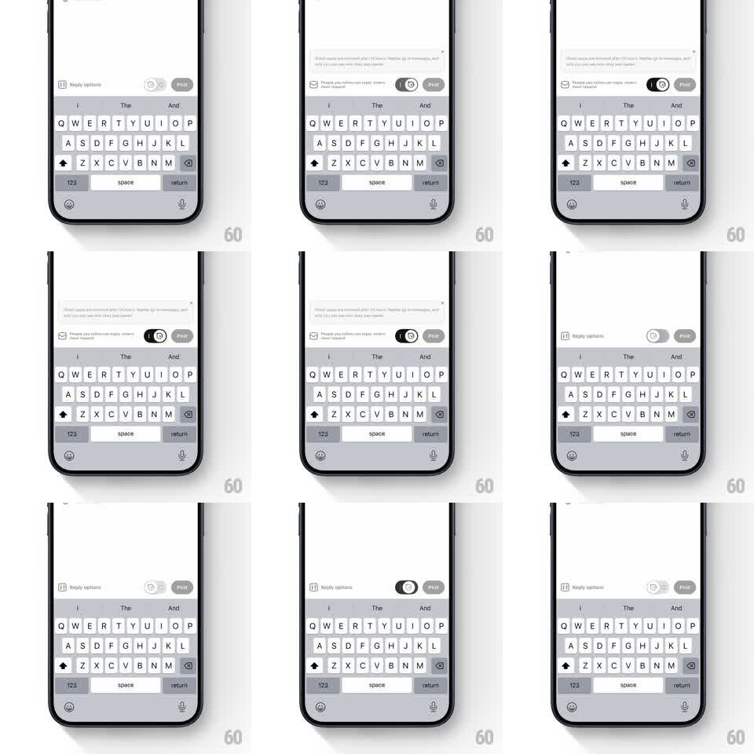

Media
Frame-by-frame

Rebuild this interaction 1:1: Threads' ghost-post toggle in the composer - tapping the ghost switch flips it with a spring and slides a small explainer card up above the toolbar, which you dismiss with its X or by tapping away.

Rebuild this interaction 1:1: Threads' ghost-post toggle in the composer - tapping the ghost switch flips it with a spring and slides a small explainer card up above the toolbar, which you dismiss with its X or by tapping away. ## Integration Integration: stack-agnostic spec - springs given as stiffness/damping, timed motions as duration + curve; map every value to your framework and animation library of choice. ## Scene Threads composer above the keyboard: a toolbar row with a "Reply options" chip, a ghost-icon toggle, and a Post button. The explainer card: a light rounded card that slides up above the toolbar - "Ghost posts are removed after 24 hours. Replies go to messages, and only you can see who liked and replied" - with a small X at its top right. ## Motion spec Pattern: springy toggle with a slide-up explainer card. - Tap the ghost toggle: the switch knob springs across (spring ~500/25, slight overshoot) and the pill fills dark when on; the toggle's icon crossfades to its filled state (120ms). - The first time it's enabled, the explainer card slides up from the toolbar (translateY 16 -> 0, spring ~400/22 with a soft bounce) and fades in simultaneously. - The card nudges the composer content up as it appears - layout shifts, nothing overlaps. - Dismiss via the X or an outside tap: the card slides back down (translateY -> 12, fade, 180ms) and the content settles back. - Toggling off while the card is visible dismisses the card with the toggle (same 180ms). ## Calibration - The card is compact - two lines of copy plus close; it reads as a tooltip, not a sheet. - The toggle spring is the personality: quick with a visible wobble at rest. ## Reduced motion Toggle snaps (150ms); card fades (200ms). ## Don't miss - The card points at the toggle contextually - it appears directly above it, anchored to the toolbar. - The Post button stays visible and unchanged through the whole interaction.